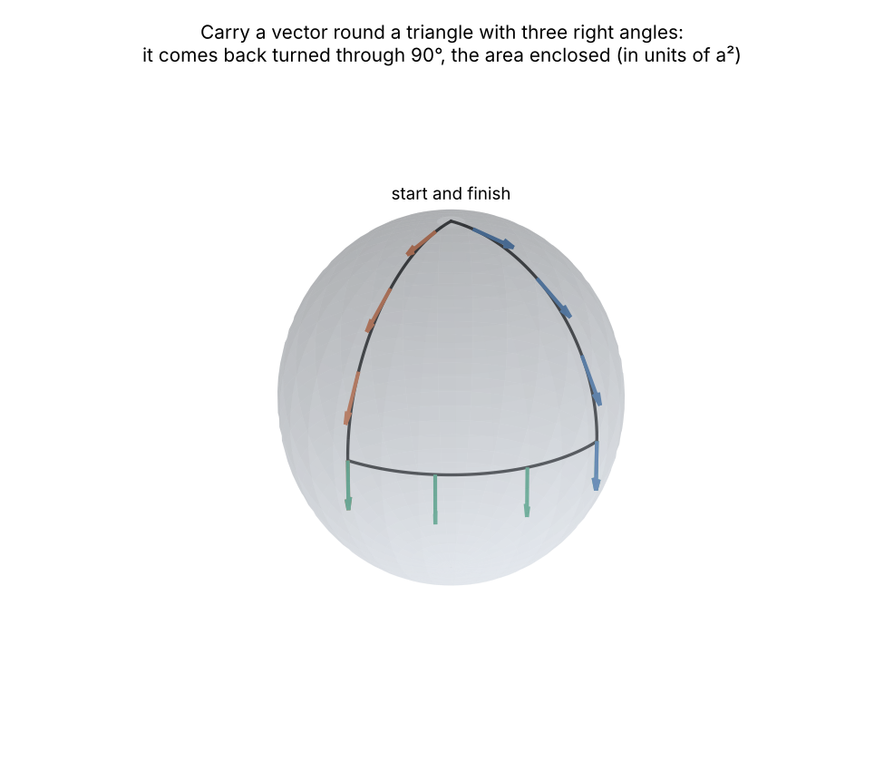
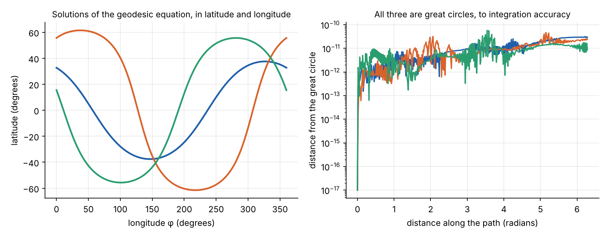

transportView = {
const host = htl.html`<div></div>`;
const mod = await import(new URL("transport.js", document.baseURI).href);
mod.mountTransport(host);
return host;
}
General Relativity from Scratch
- Manifolds
- Tensors
- The metric and spacetime
- Connections and geodesics (this part)
- Curvature
- Einstein’s equations
- de Sitter and anti-de Sitter, solved
Part 2 ended with a problem: the partial derivatives \(\partial_\mu V^\nu\) of a vector field are not the components of a tensor, because they compare vectors in different tangent spaces. This part fixes that, and the fix leads directly to the law of motion in general relativity.
The covariant derivative
Definition
A connection (or covariant derivative) \(\nabla\) takes two vector fields \(X\), \(Y\) and gives a vector field \(\nabla_X Y\), the derivative of \(Y\) in the direction \(X\), such that for all functions \(f\):
- \(\nabla_{fX + Z} Y = f\,\nabla_X Y + \nabla_Z Y\) (it is a tensor in \(X\): it depends only on \(X\) at the point);
- \(\nabla_X (Y + Z) = \nabla_X Y + \nabla_X Z\);
- \(\nabla_X (fY) = (Xf)\,Y + f\,\nabla_X Y\) (the Leibniz rule).
It is extended to all tensors by requiring the Leibniz rule for tensor products and contractions, and \(\nabla_X f = Xf\) on functions.
In a chart, the connection is determined by what it does to basis vectors. Define the connection coefficients \(\Gamma^\lambda_{\mu\nu}\) by
\[ \nabla_{\partial_\mu}\partial_\nu = \Gamma^\lambda_{\mu\nu}\,\partial_\lambda . \]
The Leibniz rule then gives, for \(V = V^\nu\partial_\nu\) and a covector \(\omega\),
\[ \nabla_\mu V^\nu = \partial_\mu V^\nu + \Gamma^\nu_{\mu\lambda}V^\lambda, \qquad \nabla_\mu \omega_\nu = \partial_\mu \omega_\nu - \Gamma^\lambda_{\mu\nu}\omega_\lambda , \]
with one \(+\Gamma\) term for each upper index and one \(-\Gamma\) term for each lower index of a general tensor. The covector rule follows from requiring \(\nabla_\mu(\omega_\nu V^\nu) = \partial_\mu(\omega_\nu V^\nu)\).
The \(\Gamma\) correction accounts for the basis itself changing from point to point. In polar coordinates, \(\partial_\phi\) grows in length and turns as you move, and \(\nabla\) subtracts that change off.
The \(\Gamma\)s are not a tensor. Under a change of coordinates,
\[ \Gamma'^\lambda_{\mu\nu} = \frac{\partial x'^\lambda}{\partial x^\alpha}\frac{\partial x^\beta}{\partial x'^\mu}\frac{\partial x^\gamma}{\partial x'^\nu}\Gamma^\alpha_{\beta\gamma} \;-\; \frac{\partial x^\beta}{\partial x'^\mu}\frac{\partial x^\gamma}{\partial x'^\nu}\frac{\partial^2 x'^\lambda}{\partial x^\beta\,\partial x^\gamma} . \]
The second term cancels exactly the non-tensorial term in \(\partial_\mu V^\nu\) found in Part 2, which is what makes \(\nabla_\mu V^\nu\) a tensor. And since the \(\Gamma\)s are not a tensor, they can be zero in one chart without being zero in another.
The Levi-Civita connection
The definition allows infinitely many connections. Two conditions pick out one.
Torsion-free. The torsion tensor is \(T(X, Y) = \nabla_X Y - \nabla_Y X - [X, Y]\). In components, \(T^\lambda_{\mu\nu} = \Gamma^\lambda_{\mu\nu} - \Gamma^\lambda_{\nu\mu}\), so a torsion-free connection has symmetric coefficients.
Metric-compatible. \(\nabla g = 0\). Then the inner product of two vectors that are both carried along a curve without change (below) stays constant: parallel transport preserves lengths and angles.
The fundamental theorem of Riemannian geometry
On a manifold with a metric, there is exactly one connection that is torsion-free and metric-compatible, the Levi-Civita connection. Its coefficients, the Christoffel symbols, are \[ \Gamma^\lambda_{\mu\nu} = \tfrac12\,g^{\lambda\sigma}\left(\partial_\mu g_{\sigma\nu} + \partial_\nu g_{\sigma\mu} - \partial_\sigma g_{\mu\nu}\right). \]
Proof. Metric compatibility in components is
\[ \nabla_\rho g_{\mu\nu} = \partial_\rho g_{\mu\nu} - \Gamma^\lambda_{\rho\mu}g_{\lambda\nu} - \Gamma^\lambda_{\rho\nu}g_{\mu\lambda} = 0 . \]
Write this three times, with the indices \((\rho, \mu, \nu)\) cycled to \((\mu, \nu, \rho)\) and \((\nu, \rho, \mu)\). Subtract the second and third from the first, and use the symmetry \(\Gamma^\lambda_{\mu\nu} = \Gamma^\lambda_{\nu\mu}\). All but two terms cancel, leaving
\[ \partial_\rho g_{\mu\nu} - \partial_\mu g_{\nu\rho} - \partial_\nu g_{\rho\mu} + 2\Gamma^\lambda_{\mu\nu}g_{\lambda\rho} = 0 . \]
Multiply by \(g^{\sigma\rho}\) to isolate \(\Gamma\). The formula is forced, so the connection is unique, and it is easily checked to satisfy both conditions, so it exists. \(\blacksquare\)
General relativity uses this connection. Every Christoffel symbol quoted in this series is computed from the formula by the SymPy library in src/gr.
Examples.
- The plane in polar coordinates, \(ds^2 = dr^2 + r^2d\phi^2\): the non-zero symbols are \(\Gamma^r_{\phi\phi} = -r\) and \(\Gamma^\phi_{r\phi} = \Gamma^\phi_{\phi r} = 1/r\). Applied to the constant field \(\partial_x\), whose polar components \((\cos\phi, -\sin\phi/r)\) vary from point to point, they give \(\nabla_\mu(\partial_x)^\nu = 0\) for every component, as they should. Part 2’s problem is solved.
- The sphere, \(ds^2 = a^2(d\theta^2 + \sin^2\theta\,d\phi^2)\): \(\Gamma^\theta_{\phi\phi} = -\sin\theta\cos\theta\) and \(\Gamma^\phi_{\theta\phi} = \cot\theta\).
Parallel transport
A vector field \(V\) along a curve \(x^\mu(\lambda)\) is parallel transported if its covariant derivative along the curve vanishes:
\[ \frac{DV^\mu}{d\lambda} \equiv \frac{dV^\mu}{d\lambda} + \Gamma^\mu_{\nu\rho}\frac{dx^\nu}{d\lambda}V^\rho = 0 . \]
This is a first-order linear differential equation, so given \(V\) at the start there is a unique solution: the vector carried along the curve “without turning”. With the Levi-Civita connection, its length is preserved.
On a curved manifold, the result depends on the path. Carry a vector from the north pole down to the equator, a quarter of the way round the equator, and back up to the pole. Every leg is a great circle, and every corner is a right angle:

The angle by which the vector turns, the holonomy of the loop, equals the area enclosed divided by \(a^2\). That is a special case of the Gauss–Bonnet theorem: for a small loop on any surface, the holonomy angle is the integral of the Gaussian curvature over the area enclosed. On a flat plane it is always zero. Curvature is, in this sense, the failure of parallel transport to be path-independent, which Part 5 makes precise.
Try it on a circle of latitude. Unlike the triangle, this path is not a geodesic (except on the equator), but parallel transport is still defined:
Along the circle at colatitude \(\theta_0\), the transport equation with the sphere’s Christoffel symbols reduces to a rotation: in the unit frame \((\hat e_\theta, \hat e_\phi)\) the vector turns at a rate of \(\cos\theta_0\) radians per radian of longitude. After one circuit it has turned by \(2\pi\cos\theta_0\) relative to the frame, which is \(2\pi(1 - \cos\theta_0)\) relative to its starting direction, equal to the area of the polar cap divided by \(a^2\).
This is the Foucault pendulum. The plane of a pendulum’s swing is parallel transported as the Earth carries it round its circle of latitude once a day, and so turns relative to the ground by \(2\pi\cos\theta_0 = 2\pi\sin(\text{latitude})\) a day. In Paris, at 48.85° north, that is 271° a day, a full turn in about 32 hours, which Léon Foucault demonstrated at the Panthéon in 1851.
Geodesics
A geodesic is a curve that parallel transports its own tangent vector: it never turns. With \(u^\mu = dx^\mu/d\lambda\),
\[ \boxed{\frac{d^2x^\mu}{d\lambda^2} + \Gamma^\mu_{\nu\rho}\frac{dx^\nu}{d\lambda}\frac{dx^\rho}{d\lambda} = 0 .} \]
This is the geodesic equation: a second-order ODE, so a point and an initial velocity determine a unique geodesic. The parameter \(\lambda\) is fixed up to \(\lambda \to a\lambda + b\), and is called affine. Since parallel transport preserves length, \(g_{\mu\nu}u^\mu u^\nu\) is constant along a geodesic, so a geodesic that starts timelike, null or spacelike stays that way.
The same curves extremise length. The geodesic equation also follows from a variational principle. Take the Lagrangian \(L = \frac12 g_{\mu\nu}(x)\,\dot x^\mu\dot x^\nu\), with dots for \(d/d\lambda\). Its Euler–Lagrange equation is
\[ \frac{d}{d\lambda}\left(g_{\mu\nu}\dot x^\nu\right) - \tfrac12\,\partial_\mu g_{\nu\rho}\,\dot x^\nu\dot x^\rho = g_{\mu\nu}\ddot x^\nu + \partial_\rho g_{\mu\nu}\dot x^\rho\dot x^\nu - \tfrac12\partial_\mu g_{\nu\rho}\dot x^\nu\dot x^\rho = 0 . \]
Symmetrising the middle term and multiplying by \(g^{\sigma\mu}\) gives exactly the geodesic equation with the Christoffel symbols. Extremising this energy functional is equivalent to extremising length with an affine parameter. In Riemannian geometry, short enough geodesics minimise length. For timelike curves in spacetime, they maximise proper time, as the twin paradox of Part 3 showed.
This variational form is often the fastest way to find Christoffel symbols: write down \(L\), read the coefficients off its Euler–Lagrange equations.
On the sphere the geodesic equations are
\[ \ddot\theta - \sin\theta\cos\theta\,\dot\phi^2 = 0, \qquad \ddot\phi + 2\cot\theta\,\dot\theta\dot\phi = 0 , \]
and their solutions are great circles. Integrating them numerically, from the library’s Christoffel symbols, confirms it:

Normal coordinates and the equivalence principle
At any point \(p\), follow each geodesic from \(p\) with initial velocity \(V\) for a unit of affine parameter. This defines the exponential map \(\exp_p: T_pM \to M\), which is a diffeomorphism near the origin. Using it as a chart, with coordinates the components of \(V\), gives Riemann normal coordinates. In them, geodesics through \(p\) are straight lines, so, from the geodesic equation, \(\Gamma^\lambda_{\mu\nu}(p) = 0\), and with an orthonormal basis, \(g_{\mu\nu}(p) = \eta_{\mu\nu}\).
These are the locally inertial coordinates of Part 3, constructed explicitly. Physically they are the frame of a freely falling observer: at \(p\), there is no gravitational force. The connection coefficients are what an observer reads as gravity, and the equivalence principle says they can be transformed away at any single point. Curvature, built from their derivatives, cannot.
Free fall: the law of motion
General relativity’s law of motion is now one sentence: a freely falling body follows a timelike geodesic, and light follows a null geodesic. There is no gravitational force term.
The Newtonian limit shows that this contains Newton’s law. Take a weak, static field with metric
\[ ds^2 = -\left(1 + \frac{2\Phi}{c^2}\right)c^2dt^2 + \left(1 - \frac{2\Phi}{c^2}\right)\left(dx^2 + dy^2 + dz^2\right), \qquad |\Phi| \ll c^2 , \]
and a slow particle, \(dx^i/d\tau \ll c\), so that \(dt/d\tau \approx 1\). The geodesic equation reduces to
\[ \frac{d^2x^i}{dt^2} \approx -\Gamma^i_{00}\,c^2 = -\partial_i\Phi , \]
since, to first order, \(\Gamma^i_{00} = \partial_i\Phi/c^2\) (checked in check34.py). This is Newton’s law, with \(\Phi\) the Newtonian potential. Newtonian gravity is the time–time part of the metric, and the “force” is a Christoffel symbol. Part 6 finds the field equation that determines \(\Phi\), and its relativistic completion.
Summary
- A connection defines the derivative of tensors on a manifold. Its coefficients are not a tensor.
- There is exactly one torsion-free, metric-compatible connection. Its coefficients are the Christoffel symbols.
- Parallel transport carries a vector along a curve without turning it. Round a loop, it comes back rotated by the enclosed curvature: on the sphere, by the area divided by \(a^2\).
- Geodesics parallel transport their own tangent. They extremise length, and in spacetime maximise proper time.
- Free fall is geodesic motion. Newton’s law is the slow, weak-field limit.
References
- S. M. Carroll, Spacetime and Geometry, chapter 3.
- R. M. Wald, General Relativity, section 3.1–3.3.
- J. M. Lee, Introduction to Riemannian Manifolds, 2nd edition (Springer, 2018), chapters 4–6.
- C. W. Misner, K. S. Thorne and J. A. Wheeler, Gravitation, chapters 10–11.
Code: src/gr: gr.py (the library), figs34.py, check34.py. The interactive is transport.js in this post’s folder.